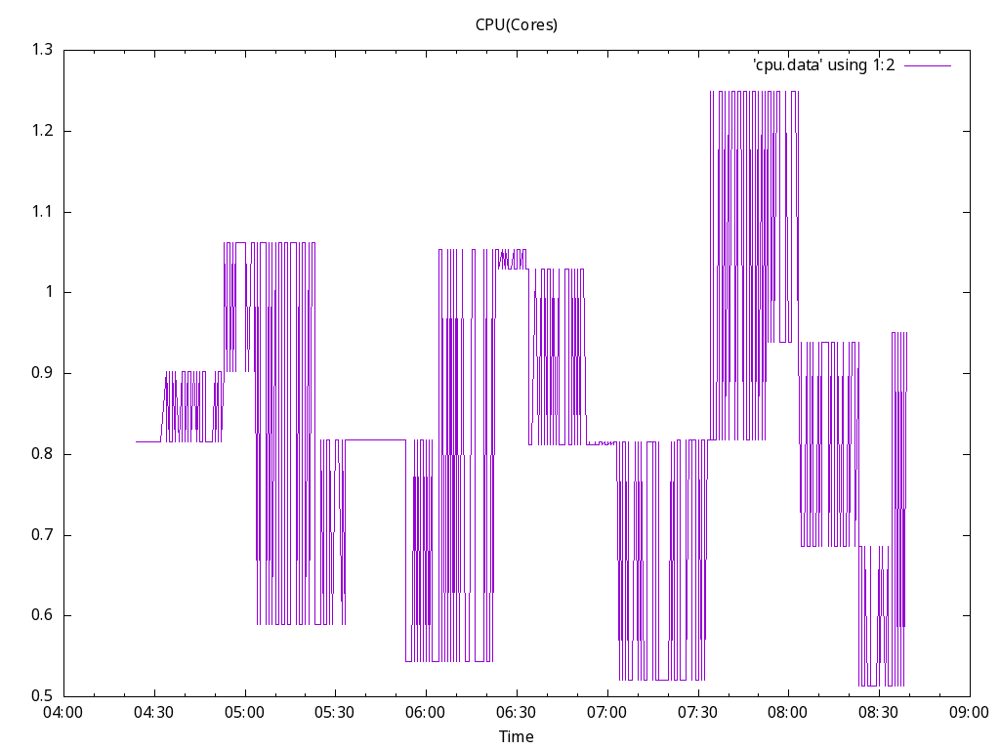
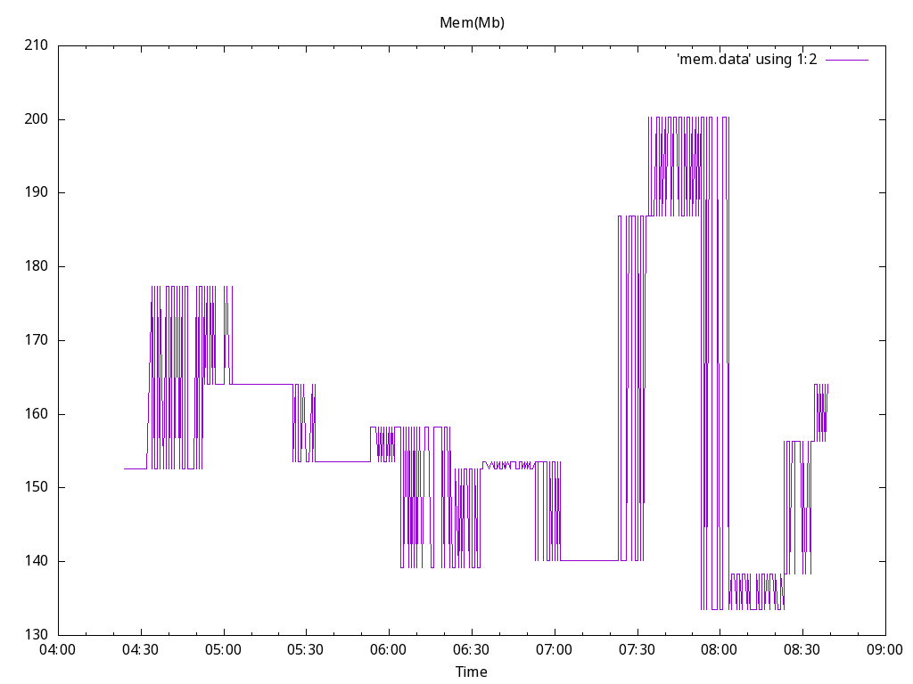
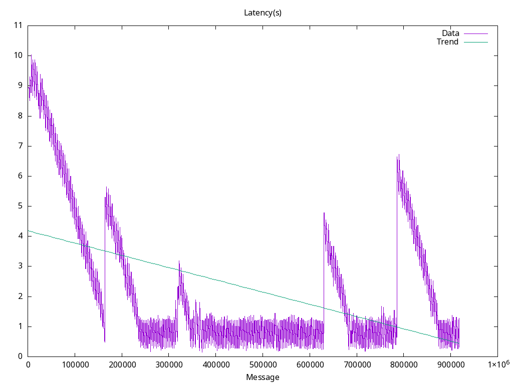
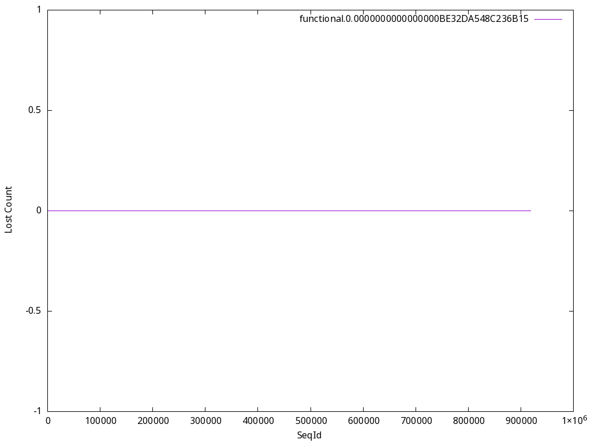

Options
Image: quay.io/openshift-logging/fluentd:5.7
Total Log Stressors: 1
Lines Per Second: 3000
Run Duration: 05m
Payload Source: synthetic
Latency of logs collected based on the time the log was generated and ingested
| Total |
Size |
Elapsed |
Mean |
Min |
Max |
Median |
| Msg |
|
(s) |
(s) |
(s) |
(s) |
(s) |
| 918409 |
256 |
5m0s |
2.315 |
0.151 |
10.032 |
1.199 |




| Stream |
Min Seq |
Max Seq |
Purged |
Collected |
Percent Collected |
| functional.0.0000000000000000BE32DA548C236B15 | 0 | 918408 | 0 | 918409 | 100.0% |
## CLO GENERATED CONFIGURATION ###
# This file is a copy of the fluentd configuration entrypoint
# which should normally be supplied in a configmap.
<system>
log_level "#{ENV['LOG_LEVEL'] || 'warn'}"
</system>
# Prometheus Monitoring
<source>
@type prometheus
bind "#{ENV['PROM_BIND_IP']}"
<transport tls>
cert_path /etc/collector/metrics/tls.crt
private_key_path /etc/collector/metrics/tls.key
min_version TLS1_2
max_version TLS1_3
ciphers TLS_AES_128_GCM_SHA256:TLS_AES_256_GCM_SHA384:TLS_CHACHA20_POLY1305_SHA256:ECDHE-ECDSA-AES128-GCM-SHA256:ECDHE-RSA-AES128-GCM-SHA256:ECDHE-ECDSA-AES256-GCM-SHA384:ECDHE-RSA-AES256-GCM-SHA384:ECDHE-ECDSA-CHACHA20-POLY1305:ECDHE-RSA-CHACHA20-POLY1305:DHE-RSA-AES128-GCM-SHA256:DHE-RSA-AES256-GCM-SHA384
</transport>
</source>
<source>
@type prometheus_monitor
<labels>
hostname ${hostname}
</labels>
</source>
# excluding prometheus_tail_monitor
# since it leaks namespace/pod info
# via file paths
# tail_monitor plugin which publishes log_collected_bytes_total
<source>
@type collected_tail_monitor
<labels>
hostname ${hostname}
</labels>
</source>
# This is considered experimental by the repo
<source>
@type prometheus_output_monitor
<labels>
hostname ${hostname}
</labels>
</source>
# Logs from containers (including openshift containers)
<source>
@type tail
@id container-input
path "/var/log/pods/testhack-dtvnwowk_*/loader-*/*.log"
exclude_path ["/var/log/pods/testhack-dtvnwowk_collector-*/*/*.log", "/var/log/pods/testhack-dtvnwowk_elasticsearch-*/*/*.log", "/var/log/pods/testhack-dtvnwowk_kibana-*/*/*.log", "/var/log/pods/testhack-dtvnwowk_*/loki*/*.log", "/var/log/pods/testhack-dtvnwowk_*/gateway/*.log", "/var/log/pods/testhack-dtvnwowk_*/opa/*.log", "/var/log/pods/*/*/*.gz", "/var/log/pods/*/*/*.tmp"]
pos_file "/var/lib/fluentd/pos/es-containers.log.pos"
follow_inodes true
refresh_interval 5
rotate_wait 5
tag kubernetes.*
read_from_head "true"
skip_refresh_on_startup true
@label @CONCAT
<parse>
@type regexp
expression /^(?<@timestamp>[^\s]+) (?<stream>stdout|stderr) (?<logtag>[F|P]) (?<message>.*)$/
time_key '@timestamp'
keep_time_key true
</parse>
</source>
# Concat log lines of container logs, and send to INGRESS pipeline
<label @CONCAT>
<filter kubernetes.**>
@type concat
key message
partial_key logtag
partial_value P
separator ''
</filter>
<match kubernetes.**>
@type relabel
@label @INGRESS
</match>
</label>
# Ingress pipeline
<label @INGRESS>
# Filter out PRIORITY from journal logs
<filter journal>
@type grep
<exclude>
key PRIORITY
pattern ^7$
</exclude>
</filter>
# Process OVN logs
<filter ovn-audit.log**>
@type record_modifier
<record>
@timestamp ${DateTime.parse(record['message'].split('|')[0]).rfc3339(6)}
level ${record['message'].split('|')[3].downcase}
</record>
</filter>
# Process Kube and OpenShift Audit logs
<filter k8s-audit.log openshift-audit.log>
@type record_modifier
<record>
@timestamp ${record['requestReceivedTimestamp']}
</record>
</filter>
# Retag Journal logs to specific tags
<match journal>
@type rewrite_tag_filter
# skip to @INGRESS label section
@label @INGRESS
# see if this is a kibana container for special log handling
# looks like this:
# k8s_kibana.a67f366_logging-kibana-1-d90e3_logging_26c51a61-2835-11e6-ad29-fa163e4944d5_f0db49a2
# we filter these logs through the kibana_transform.conf filter
<rule>
key CONTAINER_NAME
pattern ^k8s_kibana\.
tag kubernetes.journal.container.kibana
</rule>
<rule>
key CONTAINER_NAME
pattern ^k8s_[^_]+_logging-eventrouter-[^_]+_
tag kubernetes.journal.container._default_.kubernetes-event
</rule>
# mark logs from default namespace for processing as k8s logs but stored as system logs
<rule>
key CONTAINER_NAME
pattern ^k8s_[^_]+_[^_]+_default_
tag kubernetes.journal.container._default_
</rule>
# mark logs from kube-* namespaces for processing as k8s logs but stored as system logs
<rule>
key CONTAINER_NAME
pattern ^k8s_[^_]+_[^_]+_kube-(.+)_
tag kubernetes.journal.container._kube-$1_
</rule>
# mark logs from openshift-* namespaces for processing as k8s logs but stored as system logs
<rule>
key CONTAINER_NAME
pattern ^k8s_[^_]+_[^_]+_openshift-(.+)_
tag kubernetes.journal.container._openshift-$1_
</rule>
# mark logs from openshift namespace for processing as k8s logs but stored as system logs
<rule>
key CONTAINER_NAME
pattern ^k8s_[^_]+_[^_]+_openshift_
tag kubernetes.journal.container._openshift_
</rule>
# mark fluentd container logs
<rule>
key CONTAINER_NAME
pattern ^k8s_.*fluentd
tag kubernetes.journal.container.fluentd
</rule>
# this is a kubernetes container
<rule>
key CONTAINER_NAME
pattern ^k8s_
tag kubernetes.journal.container
</rule>
# not kubernetes - assume a system log or system container log
<rule>
key _TRANSPORT
pattern .+
tag journal.system
</rule>
</match>
# Invoke kubernetes apiserver to get kubernetes metadata
<filter kubernetes.**>
@id kubernetes-metadata
@type kubernetes_metadata
kubernetes_url 'https://kubernetes.default.svc'
annotation_match ["^containerType\.logging\.openshift\.io\/.*$"]
allow_orphans false
cache_size '1000'
ssl_partial_chain 'true'
</filter>
# Parse Json fields for container, journal and eventrouter logs
<filter kubernetes.var.log.pods.**_eventrouter-**>
@type parse_json_field
merge_json_log true
preserve_json_log true
json_fields 'message'
</filter>
# Fix level field in audit logs
<filter k8s-audit.log**>
@type record_modifier
<record>
k8s_audit_level ${record['level']}
</record>
</filter>
<filter openshift-audit.log**>
@type record_modifier
<record>
openshift_audit_level ${record['level']}
</record>
</filter>
# Viaq Data Model
<filter **>
@type viaq_data_model
enable_flatten_labels true
enable_prune_empty_fields false
default_keep_fields CEE,time,@timestamp,aushape,ci_job,collectd,docker,fedora-ci,file,foreman,geoip,hostname,ipaddr4,ipaddr6,kubernetes,level,message,namespace_name,namespace_uuid,offset,openstack,ovirt,pid,pipeline_metadata,rsyslog,service,systemd,tags,testcase,tlog,viaq_msg_id
keep_empty_fields 'message'
rename_time true
pipeline_type 'collector'
process_kubernetes_events false
<level>
name warn
match 'Warning|WARN|^W[0-9]+|level=warn|Value:warn|"level":"warn"'
</level>
<level>
name info
match 'Info|INFO|^I[0-9]+|level=info|Value:info|"level":"info"'
</level>
<level>
name error
match 'Error|ERROR|^E[0-9]+|level=error|Value:error|"level":"error"'
</level>
<level>
name critical
match 'Critical|CRITICAL|^C[0-9]+|level=critical|Value:critical|"level":"critical"'
</level>
<level>
name debug
match 'Debug|DEBUG|^D[0-9]+|level=debug|Value:debug|"level":"debug"'
</level>
<formatter>
tag "journal.system**"
type sys_journal
remove_keys log,stream,MESSAGE,_SOURCE_REALTIME_TIMESTAMP,__REALTIME_TIMESTAMP,CONTAINER_ID,CONTAINER_ID_FULL,CONTAINER_NAME,PRIORITY,_BOOT_ID,_CAP_EFFECTIVE,_CMDLINE,_COMM,_EXE,_GID,_HOSTNAME,_MACHINE_ID,_PID,_SELINUX_CONTEXT,_SYSTEMD_CGROUP,_SYSTEMD_SLICE,_SYSTEMD_UNIT,_TRANSPORT,_UID,_AUDIT_LOGINUID,_AUDIT_SESSION,_SYSTEMD_OWNER_UID,_SYSTEMD_SESSION,_SYSTEMD_USER_UNIT,CODE_FILE,CODE_FUNCTION,CODE_LINE,ERRNO,MESSAGE_ID,RESULT,UNIT,_KERNEL_DEVICE,_KERNEL_SUBSYSTEM,_UDEV_SYSNAME,_UDEV_DEVNODE,_UDEV_DEVLINK,SYSLOG_FACILITY,SYSLOG_IDENTIFIER,SYSLOG_PID
</formatter>
<formatter>
tag "kubernetes.var.log.pods.**_eventrouter-** k8s-audit.log** openshift-audit.log** ovn-audit.log**"
type k8s_json_file
remove_keys stream
process_kubernetes_events 'true'
</formatter>
<formatter>
tag "kubernetes.var.log.pods**"
type k8s_json_file
remove_keys stream
</formatter>
</filter>
# Generate elasticsearch id
<filter **>
@type elasticsearch_genid_ext
hash_id_key viaq_msg_id
alt_key kubernetes.event.metadata.uid
alt_tags 'kubernetes.var.log.pods.**_eventrouter-*.** kubernetes.journal.container._default_.kubernetes-event'
</filter>
# Discard Infrastructure logs
<match kubernetes.var.log.pods.openshift_** kubernetes.var.log.pods.openshift-*_** kubernetes.var.log.pods.default_** kubernetes.var.log.pods.kube-*_** journal.** system.var.log**>
@type null
</match>
# Include Application logs
<match kubernetes.**>
@type relabel
@label @_APPLICATION
</match>
# Discard Audit logs
<match linux-audit.log** k8s-audit.log** openshift-audit.log** ovn-audit.log**>
@type null
</match>
# Send any remaining unmatched tags to stdout
<match **>
@type stdout
</match>
</label>
# Routing Application to pipelines
<label @_APPLICATION>
<filter **>
@type record_modifier
<record>
log_type application
</record>
</filter>
<match **>
@type label_router
<route>
@label @FORWARD_PIPELINE
<match>
namespaces testhack-dtvnwowk
</match>
</route>
</match>
</label>
# Copying pipeline forward-pipeline to outputs
<label @FORWARD_PIPELINE>
<match **>
@type relabel
@label @HTTP
</match>
</label>
# Ship logs to specific outputs
<label @HTTP>
#dedot namespace_labels and rebuild message field if present
<filter **>
@type record_modifier
<record>
_dummy_ ${if m=record.dig("kubernetes","namespace_labels");record["kubernetes"]["namespace_labels"]={}.tap{|n|m.each{|k,v|n[k.gsub(/[.\/]/,'_')]=v}};end}
_dummy2_ ${if m=record.dig("kubernetes","labels");record["kubernetes"]["labels"]={}.tap{|n|m.each{|k,v|n[k.gsub(/[.\/]/,'_')]=v}};end}
_dummy3_ ${if m=record.dig("kubernetes","flat_labels");record["kubernetes"]["flat_labels"]=[].tap{|n|m.each_with_index{|s, i|n[i] = s.gsub(/[.\/]/,'_')}};end}
</record>
remove_keys _dummy_, _dummy2_, _dummy3_
</filter>
<match **>
@type http
endpoint http://localhost:8090
http_method post
content_type application/x-ndjson
headers {"k1":"v1"}
<buffer>
@type file
path '/var/lib/fluentd/http'
flush_mode interval
flush_interval 1s
flush_thread_count 2
retry_type exponential_backoff
retry_wait 1s
retry_max_interval 60s
retry_timeout 60m
queued_chunks_limit_size "#{ENV['BUFFER_QUEUE_LIMIT'] || '32'}"
total_limit_size "#{ENV['TOTAL_LIMIT_SIZE_PER_BUFFER'] || '8589934592'}"
chunk_limit_size "#{ENV['BUFFER_SIZE_LIMIT'] || '8m'}"
overflow_action block
disable_chunk_backup true
</buffer>
</match>
</label>